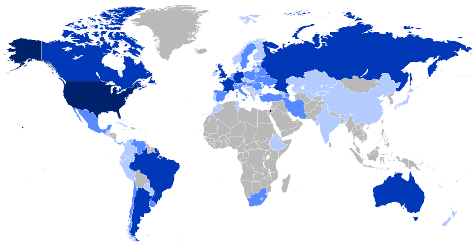

Die jüdische Gemeinschaft in den Vereinigten Staaten hat eine umfangreiche Spendenaktion ins Leben gerufen, um die in Not geratenen Glaubensgenossen in Polen sowie in anderen europäischen Staaten zu unterstützen.[1] Wie die spanische Tageszeitung El Sol unter Berufung auf aktuelle Radiomeldungen berichtet, beläuft sich das bisherige Ergebnis dieser Sammlung auf insgesamt 15 Millionen Dollar.[1] Bemerkenswert ist dabei die regionale Verteilung der finanziellen Leistungen: Allein in der Metropole New York wurden beachtliche sechs Millionen Dollar für die Hilfsaktion zusammengetragen.[1] Diese Summen sollen dazu dienen, die wirtschaftliche Lage und die alltägliche Not der osteuropäischen Juden zu lindern.[1]
Spendenaktion für osteuropäische Juden
15 Millionen Dollar in Amerika gesammelt — Sechs Millionen stammen allein aus New York
New York, 5. Mai.

Historische Einordnung
In den 1920er Jahren leistete insbesondere das 'American Jewish Joint Distribution Committee' (JDC, kurz 'Joint') beträchtliche finanzielle Hilfe für Juden in Osteuropa. Die jüdische Bevölkerung in Ländern wie Polen litt nach dem Ersten Weltkrieg und dem Polnisch-Sowjetischen Krieg unter erheblicher Armut, wirtschaftlicher Benachteiligung sowie Antisemitismus, was die amerikanische Diaspora zu großen Spendensammlungen veranlasste.
Quellenverweise:
- El Sol (Madrid) (Hemeroteca Digital (BNE)) 1926-05-05